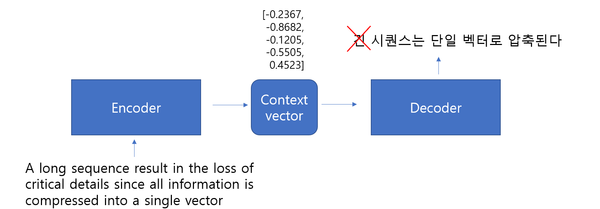

Attention enhances Seq2Seq models by allowing the decoder to selectively focus on different parts of the input sequence at each decoding step
Instead of relying on a fixed-length context vector from the encoder, the decoder computes a dynamic context vector by weighting the encoder’s hidden states based on their relevance to the current decoding step.
9.1.1 Fixed-length context vector
Information bottleneck
Long input sequences result in the loss of critical details since all information is compressed into a single vector.
Vanishing context
For longer sequences, earlier tokens in the input become less relevant in the compressed context vector.
Difficulty in aligning input and output
There’s no direct alignment between specific input tokens and the corresponding output tokens.

9.1.2 Attention Mechanism
The attention mechanism addresses these issues by dynamically focusing on different parts of the input sequence for each output token.
Dynamic Context
Instead of relying on a single fixed-length vector, the context vector is dynamically computed by “attending” to specific encoder hidden states.
Better Handling of Long Sequences
Attention allows the decoder to retrieve relevant information from any part of the input, regardless of sequence length.
Alignment Between Input and Output
Attention naturally creates alignments, making it easier to map input tokens to corresponding output tokens.